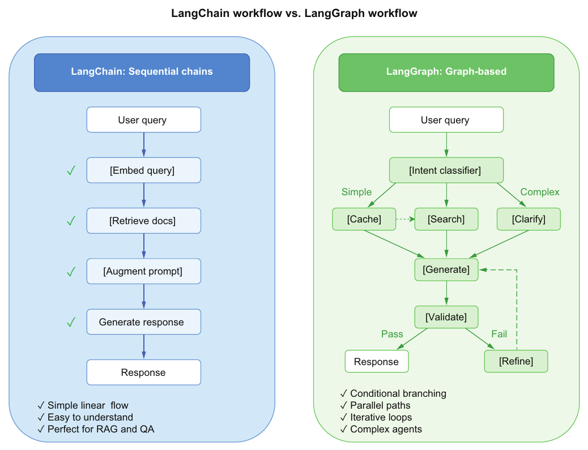
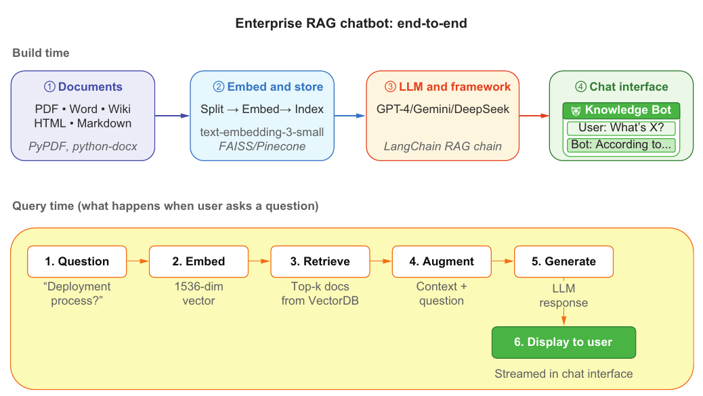

فصل ۱۲ · صص. ۳۵۹–۴۰۸
طراحی سیستمهای مبتنی بر LLM
Designing LLM-powered systems
Machine Learning Platform Engineering, 1st Edition
بخش چهارم کتاب MLOps را به LLM گسترش میدهد، با این ادعا که LLMOps بازسازی نیست، تکامل است: cluster Kubernetes، مانیتورینگ و CI/CD میمانند و چند جزء تازه کنارشان مینشیند (صص. ۳۶۰–۳۶۱). فصل اول توضیح میدهد LLM کجا فرضیات MLOps را میشکند: خروجی nondeterministic، زنجیرهی چندمرحلهای، prompt بهعنوان کد، هزینهی وابسته به token و بردارهای حملهی تازه (صص. ۳۶۰–۳۶۷). بعد ابزارهای پایه را معرفی میکند: embedding، پایگاه دادهی برداری FAISS، LangChain و LangGraph، Langfuse و Promptfoo (صص. ۳۶۷–۳۷۳). هستهی فصل ساختن DakkaBot است: یک RAG برای مستندات داخلی شرکت خیالی DataKrypt با Gemini، FAISS و LangChain، با UI در Chainlit (صص. ۳۷۳–۳۹۹). فصل با observability مخصوص LLM در Langfuse تمام میشود: trace هر پرسش، token و هزینه و latency (صص. ۳۹۹–۴۰۷).
فهرست خود فصل (از فهرست مطالب کتاب)
- ۱۲.۱ LLMOps: چالشهای تازه، اصول آشنا — ص. ۳۶۰
- ۱۲.۱.۱ چه چیزی برنامههای LLM را متفاوت میکند — ص. ۳۶۰
- ۱۲.۱.۲ گسترش platform ML برای LLM — ص. ۳۶۴
- ۱۲.۱.۳ ابزارهای اساسی برای برنامههای LLM — ص. ۳۶۷
- ۱۲.۲ ساختن DakkaBot برای DataKrypt: یک معماری RAG ساده — ص. ۳۷۳
- ۱۲.۲.۱ چه میسازید — ص. ۳۷۴
- ۱۲.۲.۲ فراتر از یک فراخوانی API: طراحی برای ترکیبپذیری — ص. ۳۷۵
- ۱۲.۲.۳ LLM و embeddingهای Gemini گوگل — ص. ۳۷۶
- ۱۲.۲.۴ جزء retrieval — ص. ۳۷۷
- ۱۲.۲.۵ جزء augmentation — ص. ۳۸۴
- ۱۲.۲.۶ جزء generation — ص. ۳۸۵
- ۱۲.۳ دادن UI به DakkaBot — ص. ۳۸۷
- ۱۲.۴ observability برای برنامههای LLM — ص. ۳۹۹
- ۱۲.۴.۱ راهاندازی Langfuse با Docker — ص. ۴۰۰
- ۱۲.۴.۲ یکپارچه کردن Langfuse با DakkaBot — ص. ۴۰۰
- ۱۲.۴.۳ observability بیشتر در DakkaBotCore — ص. ۴۰۰
- ۱۲.۴.۴ فراتر از متریکهای سنتی — ص. ۴۰۴
از کتاب
مقدمه
نقشهی ذهنی این فصل دو نیمه دارد: سمت چپ اجزای MLOps که در فصلهای قبل ساخته شد، سمت راست افزودههای LLM: ingestion سند، پایگاه دادهی برداری، مدیریت prompt، guardrailهای ایمنی و observability (ص. ۳۶۰).
۱۲.۱ LLMOps: چالشهای تازه، اصول آشنا
۱۲.۱.۱ چه چیزی برنامههای LLM را متفاوت میکند
صص. ۳۶۰–۳۶۴| پارامتر sampling | چه میکند |
|---|---|
| temperature | صفر یعنی همیشه محتملترین token؛ ۰٫۷ تا ۱ تنوع بیشتر و انسجام کمتر |
| top-K | فقط K token محتمل؛ top_k=1 یعنی deterministic |
| top-P | کوچکترین مجموعهای که احتمال تجمعیاش به P میرسد؛ اندازهاش با اطمینان مدل عوض میشود |
از p. 362. nondeterminism همیشه دشمن نیست: برای ایدهپردازی و گفتوگوی طبیعی لازم است؛ برای بازیابی واقعیت temperature صفر بگذارید (ص. ۳۶۲).
| تفاوت | پیامد |
|---|---|
| خروجی احتمالاتی | ارزیابی معنایی بهجای assert دقیق (صص. ۳۶۲، ۳۶۴) |
| محدودیت token | ورودی بیش از حد یعنی شکست درخواست؛ خروجی بیش از حد یعنی پاسخ بریده (ص. ۳۶۳) |
| زنجیرهی چندمرحلهای | debug خطای مرحلهی ۵ از ۱۲ سخت است (ص. ۳۶۴) |
| prompt engineering | prompt کد است و نسخه و آزمون میخواهد (ص. ۳۶۴) |
| هزینهی وابسته به token | یک پرسش پیچیده میتواند ۱۰۰ برابر یک پرسش ساده هزینه داشته باشد (ص. ۳۶۴) |
بودجهی token، مثال کتاب (ص. ۳۶۳):
flowchart LR
A["۵۰ chunk × ۵۰۰ token<br/>= ۲۵K"] --> T["۲۷K پیش از تولید"]
B["system prompt<br/>۲K"] --> T
C["پرسش کاربر<br/>۱۰۰"] --> T
T --> R["با پنجرهی ۳۲K<br/>فقط ۵K برای پاسخ"]۱۲.۱ LLMOps: چالشهای تازه، اصول آشنا
۱۲.۱.۲ گسترش platform ML برای LLM
صص. ۳۶۴–۳۶۷چه میماند: container، load balancer و autoscaling، CI/CD فصل ۳، experiment tracking و lineage فصلهای ۴ و ۹، Prometheus و Grafana، و احراز هویت و network policy (صص. ۳۶۴–۳۶۶).
چه اضافه میشود:
| جزء | نیاز production |
|---|---|
| پایگاه دادهی برداری | backup، نسخهی index و rollback، مانیتورینگ جستوجو (ص. ۳۶۶) |
| مدیریت prompt | نسخه در git، A/B test، deploy و rollback مثل کد (صص. ۳۶۶–۳۶۷) |
| LLM gateway | مسیریابی بین providerها، cache معنایی، rate limit بر حسب token، fallback به مدل با پنجرهی بزرگتر (ص. ۳۶۷) |
| مانیتورینگ ویژه | هزینهی token، کیفیت پاسخ، trace چندمرحلهای، هشدار نقض ایمنی (ص. ۳۶۷) |
امنیت: prompt injection، data poisoning، jailbreak، injection غیرمستقیم از دادهی بیرونی و نشت دادهی آموزش (ص. ۳۶۶). مدلهای سنتی و برنامههای LLM در یک cluster، با همان ingress و HPA اجرا میشوند (ص. ۳۶۷).
API پیشبینی stack مرجع در MLflow نسخهی مدل و پارامترها را ثبت میکند و GitLab CI و Argo CD آن را deploy میکنند.
?نوبت شما · team میخواهد یک دستیار پرسش و پاسخ روی مستندات dbt و runbookها بسازد. کدام چیزها باید مثل وزن مدل نسخهگذاری و از همان CI و Argo CD رد شوند؟دیدن پاسخ
system prompt و template، شناسهی مدل LLM و پارامترهایی مثل temperature و max_tokens، مدل embedding، پارامترهای retrieval مثل k و اندازهی chunk، و خود index برداری (صص. ۳۶۵–۳۶۶). کتاب میگوید تغییر system prompt به اندازهی عوض کردن مدل اثر دارد (ص. ۴۰۸)؛ پس یک PR روی prompt همان review و rollback را میخواهد.
۱۲.۱ LLMOps: چالشهای تازه، اصول آشنا
۱۲.۱.۳ ابزارهای اساسی برای برنامههای LLM
صص. ۳۶۷–۳۷۳| ابزار | نقش |
|---|---|
| مدل embedding | متن را به بردار تبدیل میکند تا جستوجو معنایی باشد، نه کلیدواژهای (صص. ۳۶۷–۳۶۸) |
| FAISS | جستوجوی سریع نزدیکترین بردارها؛ در مقیاس بزرگ Pinecone، Weaviate یا Chroma (صص. ۳۶۸–۳۶۹) |
| LangChain | loader، splitter، embedding، vector store و LLM با رابط یکسان و قابلتعویض، بهعلاوهی retry و cache و streaming (صص. ۳۶۹–۳۷۱) |
| LangGraph | انشعاب شرطی، اجرای موازی و حلقه برای agentها (ص. ۳۷۲) |
| Langfuse | trace، هزینه، زمان تا اولین token و مدیریت prompt (ص. ۳۷۳) |
| Promptfoo | پیدا کردن آسیبپذیری در خود برنامهی LLM (ص. ۳۷۳) |


توصیهی کتاب: با LangChain شروع کنید و وقتی نیازها روشن شد، ببینید abstractionها هنوز به کارتان میآیند یا نه (ص. ۳۷۳).
۱۲.۲ ساختن DakkaBot برای DataKrypt: یک معماری RAG ساده
۱۲.۲.۱ چه میسازید
صص. ۳۷۳–۳۷۵شرکت DataKrypt از ۵۰ نفر به بیش از ۲۰۰ مهندس رسیده و مستندات خوبش برای تازهواردها زیاد و گیجکننده شده است؛ DakkaBot پرسشها را از روی همین مستندات پاسخ میدهد (صص. ۳۷۳–۳۷۴).


۱۲.۲ ساختن DakkaBot برای DataKrypt: یک معماری RAG ساده
۱۲.۲.۲ فراتر از یک فراخوانی API: طراحی برای ترکیبپذیری
صص. ۳۷۵–۳۷۶| محدودیت یک prompt بزرگ | پاسخ RAG |
|---|---|
| پنجرهی context محدود است | فقط بخشهای مرتبط بازیابی میشوند |
| prompt طولانی کیفیت استدلال را پایین میآورد | context متمرکز |
| خطا همه یا هیچ است | گامها جدا شکست میخورند |
| پردازش تکراری context بزرگ گران است | فقط آنچه لازم است |
| مدل در تاریخ آموزش منجمد است | سند تازه بدون retrain |
| مدل دادهی خصوصی را ندیده | دسترسی به دادهی خصوصی و زنده |
| hallucination | پاسخ با منبع |
از pp. 375–376.
۱۲.۲ ساختن DakkaBot برای DataKrypt: یک معماری RAG ساده
۱۲.۲.۳ LLM و embeddingهای Gemini گوگل
صص. ۳۷۶–۳۷۷دستیار DakkaBot از text-embedding-004 و gemini-2.5-flash استفاده میکند؛ کتاب تأکید میکند این توصیهی تجاری نیست و دلیلش free tier است (ص. ۳۷۶). exponential backoff لازم است، چون throttling در سرویس مشترک گاهی به کل platform مربوط است نه به مصرف شما، و fallback به provider دیگر هم باید در نظر باشد (صص. ۳۷۶–۳۷۷).
۱۲.۲ ساختن DakkaBot برای DataKrypt: یک معماری RAG ساده
۱۲.۲.۴ جزء retrieval
صص. ۳۷۷–۳۸۴| عامل | انتخاب کتاب |
|---|---|
| embedding نامتقارن | RETRIEVAL_DOCUMENT برای index، RETRIEVAL_QUERY برای پرسش؛ معمولاً ۱۰ تا ۲۰ درصد retrieval بهتر (صص. ۳۷۸–۳۷۹) |
| chunking | RecursiveCharacterTextSplitter، ۱۰۰۰ کاراکتر با ۲۰۰ همپوشانی، شکستن در مرز سرتیتر و پاراگراف و جمله (ص. ۳۸۱) |
| معیار شباهت | cosine برای بیشتر متنها مناسب است (ص. ۳۷۹) |
| تعداد k | کم یعنی از دست دادن، زیاد یعنی نویز (ص. ۳۸۰) |
در production، تشخیص تغییر با hash یا timestamp برای re-index انتخابی، indexهای نسخهدار برای rollback و blue-green برای indexهای بزرگ (ص. ۳۸۰). index با save_local ذخیره و با همان کلاس embedding بار میشود؛ allow_dangerous_deserialization یعنی pickle، پس فایل index باید امن نگه داشته شود (صص. ۳۸۲–۳۸۴).
۱۲.۲ ساختن DakkaBot برای DataKrypt: یک معماری RAG ساده
۱۲.۲.۵ جزء augmentation
صص. ۳۸۴–۳۸۵همهی chunkهای بازیابیشده با پرسش در یک prompt ترکیب میشوند؛ نسخهی ساده فقط آنها را پشت هم میچسباند و production به حذف تکرار و قالببندی بهتر نیاز دارد (صص. ۳۸۴–۳۸۵).
۱۲.۲ ساختن DakkaBot برای DataKrypt: یک معماری RAG ساده
۱۲.۲.۶ جزء generation
صص. ۳۸۵–۳۸۷پارامتر temperature صفر خروجی را بسیار یکنواختتر میکند ولی کاملاً deterministic نه؛ برای آزمون کافی است (ص. ۳۸۵). template با بخشهای برچسبدار Context و Question و Answer مدل را به مستندات زمین میزند و hallucination را کم میکند (ص. ۳۸۶).
از کتاب
۱۲.۳ دادن UI به DakkaBot
صص. ۳۸۷–۳۹۹منطق RAG در کلاس DakkaBotCore جدا میشود تا همان هسته پشت Chainlit، FastAPI یا آزمون batch بنشیند (صص. ۳۸۸–۳۸۹):
| الگو | چرا |
|---|---|
| مقداردهی تنبل و async | بار کردن index و اتصال مدل کند است و ممکن است شکست بخورد (ص. ۳۸۹) |
| خروجی ساختاریافته | پاسخ، منبعها، تعداد سند و خطا برای UI (ص. ۳۹۱) |
| system prompt | قالب یکسان، مرز توانایی، جلوگیری از نشت دستورها، persona، guardrail (ص. ۳۹۱) |
| streaming | اول منبعها، بعد token به token، بعد سیگنال پایان (صص. ۳۹۱–۳۹۳) |
| اعتبارسنجی ورودی پیش از LLM | دفاع اول در برابر injection و صرفه در هزینه (صص. ۳۹۶–۳۹۸) |
ابزار Chainlit رابط گفتوگو را بیReact و CSS میسازد (صص. ۳۸۷–۳۸۸).
۱۲.۴ observability برای برنامههای LLM
۱۲.۴.۱ تا ۱۲.۴.۳ Langfuse
صص. ۴۰۰–۴۰۴ابزار Langfuse متنباز با Docker بالا میآید و با یک callback handler در LangChain، prompt، پاسخ، token، latency، retrieval و هزینه را ثبت میکند؛ metadata کسبوکار هم میشود اضافه کرد (صص. ۴۰۰–۴۰۲). dashboard: trace در زمان، هزینه به ازای مدل، مصرف کاربر و صدکهای latency (صص. ۴۰۲–۴۰۴). یک trace نمونه: ۱۱٫۴۸ ثانیه، ۱٬۴۰۸ token ورودی و ۲٬۳۵۹ خروجی، ۰٫۰۰۶۳۲ دلار (ص. ۴۰۴).
۱۲.۴ observability برای برنامههای LLM
۱۲.۴.۴ فراتر از متریکهای سنتی
صص. ۴۰۴–۴۰۶| بعد | چرا متریک سنتی کافی نیست |
|---|---|
| دقت | درستی طیف است؛ یکنواختی بین پرسشهای هممعنی، hallucination و لحن دیده نمیشوند |
| latency | زمان تا اولین token با زمان کل فرق دارد؛ پاسخ ۳ ثانیهای که منبع را فوراً نشان میدهد سریعتر حس میشود |
| زنجیرهی استدلال | خطا در retrieval، ساختن context یا تولید؟ |
| token | نسبت ورودی به خروجی، بهرهوری context، هزینه به ازای نوع پرسش؛ پرسش عیبیابی ممکن است ۱۰ برابر token بخورد |
از pp. 404–406.
stack مرجع Prometheus و Grafana و OTel دارد.
?نوبت شما · دستیار مستندات team راه افتاده. Grafana نشان میدهد latency و نرخ خطا عالی است، ولی کاربران میگویند پاسخها دربارهی DAGهای Airflow غلطاند. کدام داده را باید نگاه کنید که الان ندارید؟دیدن پاسخ
trace هر پرسش: کدام chunkها بازیابی شدند، context نهایی چه بود و مدل چه گفت (صص. ۳۹۹–۴۰۰). اگر chunkهای مرتبط اصلاً بازیابی نشدهاند مشکل retrieval است، مثلاً chunking یا index کهنه؛ اگر بازیابی شدهاند ولی پاسخ غلط است مشکل prompt یا مدل است (ص. ۴۰۶).
مرور
بدهبستانها در یک نگاه
| انتخاب | چه میدهد | چه میگیرد |
|---|---|---|
| temperature صفر | پاسخ یکنواخت برای پرسش واقعیت | تنوع کمتر، و هنوز کاملاً تکرارپذیر نیست (ص. ۳۸۵) |
| k بزرگتر | پوشش بیشتر | بودجهی token و نویز (صص. ۳۶۳، ۳۸۰) |
| chunk کوچک | تطابق دقیق | context کم (ص. ۳۷۹) |
| FAISS | ساده و سریع | بیتوزیع و بیفیلتر metadata، بارگذاری با pickle (صص. ۳۶۹، ۳۸۲) |
| LangChain | قطعات قابلتعویض، retry آماده | abstraction شاید بعداً سد شود (ص. ۳۷۳) |
| LangGraph | انشعاب و حلقه | پیچیدگی بیشتر (ص. ۳۷۲) |
| یک نمونهی مشترک DakkaBotCore | پاسخ سریع | باید به thread safety فکر کرد (ص. ۳۹۶) |
مرور
نکتههای کلیدی
- ویژگی nondeterminism آزمون سنتی را میشکند:
assert model.predict(x) == yبرای LLM بیمعنی است و باید درستی معنایی سنجیده شود (ص. ۳۶۲). - پارامتر temperature صفر ≠ deterministic؛ برای آزمون بهقدر کافی یکنواخت است، ولی تکرارپذیر نیست (صص. ۳۸۵، ۴۰۷).
- بودجهی token یک قید معماری است: ۵۰ chunk در ۵۰۰ token، بهعلاوهی system prompt و پرسش، ۲۷ هزار token را پیش از تولید پاسخ میخورد (ص. ۳۶۳).
- «مدل» حالا یک pipeline است: prompt، embedding، پارامترهای retrieval و پیکربندی LLM هر کدام نسخه دارند؛ تغییر system prompt به اندازهی عوض کردن مدل رفتار را عوض میکند (صص. ۳۶۵–۳۶۶، ۴۰۸).
- معماری RAG بازیابی را از تولید جدا میکند، پس دانش بدون retrain بهروز میشود، دادهی خصوصی در دسترس است و پاسخ به سند تکیه دارد (صص. ۳۷۵–۳۷۶).
- ساختن embedding سند و پرسش میتواند نامتقارن باشد:
RETRIEVAL_DOCUMENTبرای index وRETRIEVAL_QUERYبرای جستوجو (صص. ۳۷۸–۳۷۹). - هر index برداری artifact است: باید ذخیره، نسخهگذاری و با همان مدل embedding بار شود (صص. ۳۸۲–۳۸۳).
- متریکهای سنتی میگویند کی خراب است، trace میگوید چرا پاسخ بد است (صص. ۳۹۹–۴۰۰، ۴۰۷).
تمرین
خودتان را بسنجید
پرسشها و پاسخها مال vault است و از روی یادداشتهای بالا نوشته شده؛ پاسخها به صفحههای کتاب ارجاع میدهند.
۱چرا assert model.predict(x) == y برای LLM کار نمیکند؟دیدن پاسخ
همان ورودی میتواند چند پاسخ معتبر متفاوت داشته باشد؛ باید درستی معنایی، دقت واقعیت و پایبندی به دستور سنجیده شود (ص. ۳۶۲).
۳چرا DakkaBot برای سند و پرسش task type متفاوت میفرستد؟دیدن پاسخ
مدل embedding بردار را برای ذخیره و برای جستوجو جدا بهینه میکند و این معمولاً ۱۰ تا ۲۰ درصد retrieval را بهتر میکند (صص. ۳۷۸–۳۷۹).
۴چه وقت از LangChain به LangGraph بروید؟دیدن پاسخ
وقتی جریان کار انشعاب شرطی، اجرای موازی یا حلقهی بهبود میخواهد، مثل agentها؛ RAG خطی با LangChain بس است (صص. ۳۷۲–۳۷۳).
۵یک cache معنایی در LLM gateway با cache معمولی چه فرقی دارد؟دیدن پاسخ
بر اساس شباهت embedding جواب میدهد، پس دو پرسش با واژههای متفاوت و معنای یکسان پاسخ cacheشدهی یکسان میگیرند (ص. ۳۶۷).
مکمل
فراتر از کتاب
مکمل vault، نه از متن کتاب.
- نامهای مدل زود کهنه میشوند:
text-embedding-004و Gemini 1.5 از وقت نگارش کتاب جانشین گرفتهاند؛ الگوی wrapper کتاب برای همین است که عوض کردنشان ارزان باشد. - کیفیت retrieval را جدا ارزیابی کنید: یک مجموعهی کوچک پرسش با سند درست، و سنجیدن recall@k، پیش از نگاه به کیفیت پاسخ، خطای retrieval را از خطای مدل جدا میکند.
قدمهای بعدی
ادامه بدهید
پیوندها
- فصلهای مرتبط: فصل ۳: ساختن برنامه روی Kubernetes که همان cluster و CI/CD را ساخت، فصل ۱۱: مانیتورینگ و explainability که observability سنتی است، و فصل ۱۳: طراحی سیستم LLM در production که DakkaBot را با prompt management، ارزیابی، guardrail و کنترل هزینه سختتر میکند.